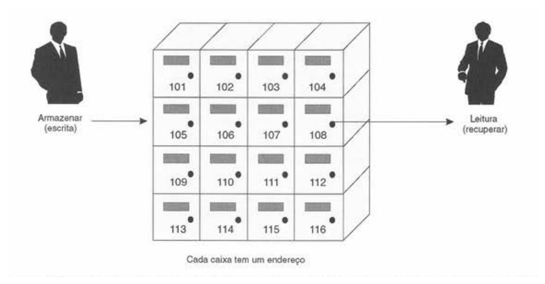
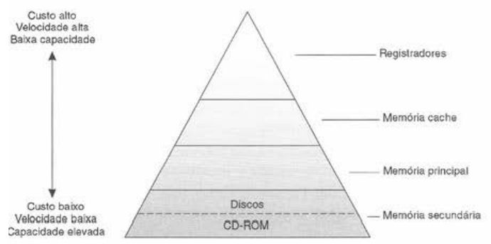

RAM
A RAM é usada como memória de trabalho. Ela permite leitura e escrita, mas é volátil.
Material didático para estudantes do 1º ano do curso técnico em informática integrado ao ensino médio do IFNMG Campus Salinas.
Referência: Livro Introdução à Organização de Computadores (Mario Antônio Monteiro).
Quando usamos um computador, várias informações precisam ser armazenadas: programas, textos, imagens, instruções e resultados de cálculos. A memória é o conjunto de componentes responsáveis por guardar essas informações e disponibilizá-las quando forem necessárias.
A memória pode ser entendida como um depósito de informações. Ela guarda dados e instruções para que o sistema consiga recuperá-los no momento certo.
Memória é o componente responsável por armazenar informações que serão usadas por um sistema de computação.
Existem vários tipos de memória porque o computador precisa equilibrar velocidade, capacidade e custo.

A memória guarda informações para o funcionamento do computador. Como não existe um único tipo de memória que seja ao mesmo tempo muito rápida, muito grande e barata, os computadores usam uma combinação de memórias diferentes.
O elemento básico de armazenamento físico de uma memória é o bit. Um bit pode assumir apenas dois valores: 0 ou 1.
Como um bit sozinho representa pouca informação, os computadores agrupam bits para formar unidades maiores.
Para encontrar uma informação armazenada, o sistema precisa saber onde ela está. Cada célula recebe um número de identificação chamado endereço.
| Conceito | Significado |
|---|---|
| Endereço | Indica a posição da célula na memória. |
| Conteúdo | É o valor armazenado naquela célula. |
| Posição | Local correspondente ao endereço. |
Na escrita, o novo valor substitui o conteúdo anterior. Na leitura, o valor é apenas copiado, sem apagar o original.
O computador usa uma hierarquia de memórias. No topo ficam memórias mais rápidas, menores e mais caras. Na base ficam memórias mais lentas, maiores e mais baratas.

| Nível | Velocidade | Capacidade | Custo por byte |
|---|---|---|---|
| Registradores | Muito alta | Muito baixa | Muito alto |
| Memória cache | Muito alta | Baixa | Alto |
| Memória principal (RAM) | Alta | Média | Médio |
| Memória secundária | Baixa | Alta | Baixo |
Pequenas memórias internas do processador.
Memória muito rápida que guarda dados usados com frequência.
Memória principal de trabalho, volátil.
Armazenamento de maior capacidade e mais duradouro.
A memória principal é organizada como um conjunto de células. Cada célula tem um endereço e armazena uma quantidade fixa de bits.
A memória principal costuma ser tratada no mercado como RAM, embora o sistema também possa possuir áreas do tipo ROM para rotinas de inicialização.
A capacidade da memória está relacionada à quantidade de células disponíveis e ao tamanho de cada célula.
Onde E é o número de bits necessários para representar os endereços.
A RAM é usada como memória de trabalho. Ela permite leitura e escrita, mas é volátil.
A ROM armazena informações que não devem ser perdidas facilmente, como rotinas de inicialização.
| Tipo | Características |
|---|---|
| ROM | Programada na fabricação. |
| PROM | Programada uma única vez após a fabricação. |
| EPROM | Pode ser apagada com luz ultravioleta e reprogramada. |
| EEPROM | Pode ser apagada e reprogramada eletricamente. |
| Flash | Semelhante à EEPROM, com apagamento rápido. |
Durante a transferência e o armazenamento de informações, podem ocorrer erros. Um bit pode mudar de 0 para 1 ou de 1 para 0.
ECC significa Error Correction Code, ou código de correção de erros.
Esse processo adiciona bits extras de controle aos dados. Quando a informação é lida, o sistema compara esses bits para verificar se houve erro.
T = N × M.O estudo da memória é essencial para entender como um computador funciona. A memória principal faz parte de uma organização maior, que envolve registradores, cache e armazenamento secundário.
Em resumo, a memória é um sistema organizado em níveis. Cada tipo tem uma função específica e todos trabalham juntos para permitir que programas e dados sejam armazenados, acessados e processados com eficiência.